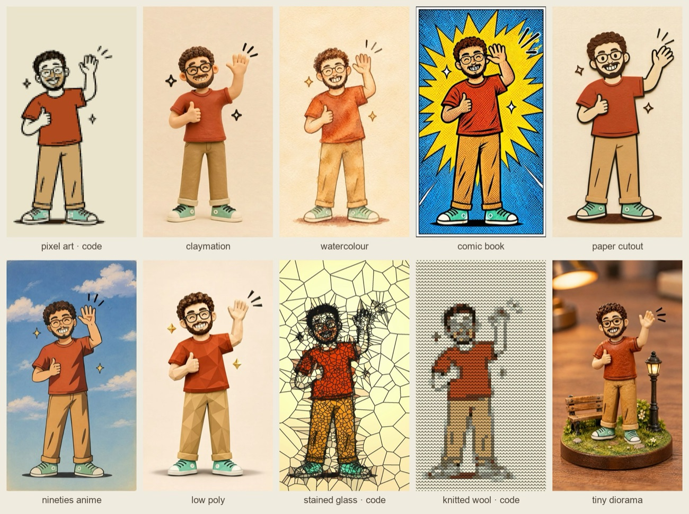
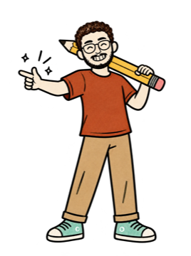

@theabhaychopra
@theabhaychopraWhat you need
- Claude with the Higgsfield connector switched on (claude.ai → + → Connectors)
- A Higgsfield plan with credits (higgsfield.ai) — the connector spends your own credits
- One image of your character: one subject, one clear pose, a plain background
- For the three code looks: Claude and Python on your laptop (free)
Claude writes and sends the prompt. Higgsfield's models do the drawing and the animating: GPT Image 2.6 for each still, Kling 3.0 for each clip. Three looks need no AI model at all: they are a filter Claude wrote in code, run on the animated clip.

The two lines that keep the pose

Redraw it, without the browser
Use the Higgsfield connector only, no browser. Redraw my mascot (Higgsfield image <your image or job id>) as claymation. Same pose, same outfit, same layout, 9:16.
Without "connector only, no browser" my Claude tried to open the Higgsfield website in my browser instead. Swap claymation for any look below, or paste a full look prompt.
Animate the still
Animate that image into a 5 second clip with Kling 3.0, sound off, 9:16. The camera stays still.
Start from a 9:16 still. Kling keeps the shape of the image you give it, so a 3:4 still comes back 3:4.
Stills: GPT Image 2.6, medium quality, 2k, 9:16, my character as the reference — 1 credit each. Clips: Kling 3.0 pro, 5 s, sound off, 9:16 — 7.5 credits each.
Claymation and watercolour
Redraw this exact character and scene as a handmade claymation still: the same man, same pose (right hand raised in a wave, left hand thumbs up, closed-eye smile), same glasses, curly hair, beard, rust-red t-shirt, tan trousers rolled at the ankle, mint sneakers, the same two small sparkles and wave motion lines. Sculpted plasticine with soft fingerprint texture, rounded clay shapes, a smooth cream clay backdrop and a soft floor shadow, gentle studio lighting. Full body centred, vertical frame with space above his head. No text.
Redraw this exact character and scene as a loose watercolour painting: the same man, same pose (right hand raised in a wave, left hand thumbs up, closed-eye smile), same glasses, curly hair, beard, rust-red t-shirt, tan trousers rolled at the ankle, mint sneakers, the two small sparkles and wave motion lines. Soft wet-on-wet washes, visible paper grain, gentle colour bleeds, a few pencil lines showing through, warm cream paper background. Full body centred, vertical frame with space above his head. No text.
Comic book and paper cutout
Redraw this exact character and scene as a bold comic book panel: the same man, same pose (right hand raised in a wave, left hand thumbs up, closed-eye smile), same glasses, curly hair, beard, rust-red t-shirt, tan trousers rolled at the ankle, mint sneakers. Heavy black inks, flat saturated colours, Ben-Day dot shading, a bright yellow starburst behind him, dynamic speed lines around the waving hand, white panel border. Full body centred, vertical frame. No text, no speech bubbles.
Redraw this exact character and scene as a layered paper cutout craft: the same man, same pose (right hand raised in a wave, left hand thumbs up, closed-eye smile), same glasses, curly hair, beard, rust-red t-shirt, tan trousers rolled at the ankle, mint sneakers, two small paper sparkles. Every shape cut from coloured card with clean scissor edges, small drop shadows between the layers, paper fibre texture, a cream card background, photographed flat from the front. Full body centred, vertical frame. No text.
Nineties anime and low poly
Redraw this exact character and scene as a hand-painted 1990s TV anime cel: the same man, same pose (right hand raised in a wave, left hand thumbs up, closed-eye smile), same glasses, curly hair, beard, rust-red t-shirt, tan trousers rolled at the ankle, mint sneakers, small sparkles. Clean cel outlines, two-tone cel shading, slightly soft film grain and gentle colour fade, a painted soft sky-and-clouds background. Full body centred, vertical frame. Original character, no text.
Redraw this exact character and scene as a low poly 3D render: the same man, same pose (right hand raised in a wave, left hand thumbs up, closed-eye smile), same glasses, curly hair, beard, rust-red t-shirt, tan trousers rolled at the ankle, mint sneakers, two faceted crystal sparkles. Clean flat-shaded triangular facets, soft studio light, a smooth cream background with a soft floor shadow. Full body centred, vertical frame. No text.
Tiny diorama
Redraw this exact character as a tiny handmade miniature figurine standing in a small tabletop diorama: the same man, same pose (right hand raised in a wave, left hand thumbs up, closed-eye smile), same glasses, curly hair, beard, rust-red t-shirt, tan trousers rolled at the ankle, mint sneakers. Painted resin figure on a small round grassy base with a tiny bench and a lamp post, shallow depth of field like a macro photo, warm desk light, blurred wooden table behind. Full figure centred, vertical frame. No text.
Swap my description (glasses, curly hair, rust-red t-shirt…) for yours. Naming every detail is what keeps the face and outfit the same across all ten.
Animate each look
The illustrated man waves hello with his raised hand, a big friendly wave side to side, the other hand keeps a thumbs up, happy closed-eye smile, the small sparkles twinkle; flat cream paper background stays the same; static camera; no text
Stop-motion claymation: the clay man waves hello with his raised hand, a big friendly wave side to side, the other hand keeps a thumbs up, happy closed-eye smile, the clay sparkles bob gently; slight stop-motion jitter; cream clay backdrop stays the same; static camera; no text
Watercolour animation: the painted man waves hello side to side, thumbs up held, happy smile, sparkles twinkle, the paint washes softly shimmer; paper background stays the same; static camera; no text
Comic book animation: the inked man waves hello side to side with snappy motion, thumbs up held, big grin, the yellow starburst pulses and the speed lines flicker; panel border stays fixed; static camera; no text
Animate each look
Paper cutout stop-motion: the cut-paper man waves his paper arm side to side in small jointed steps, thumbs up held, smile, paper sparkles wobble; card background stays the same; static camera; no text
1990s TV anime cel animation on twos: the man waves hello side to side, thumbs up held, cheerful smile, sparkles glint, clouds drift slowly; static camera; no text
Low poly 3D animation: the faceted man waves hello side to side, thumbs up held, smile, the crystal sparkles spin slowly, facets catch the light; cream background stays the same; static camera; no text
Miniature diorama stop-motion: the tiny figurine waves hello side to side in small steps, thumbs up held, smile, the tiny lamp flickers warmly, macro shallow depth of field; static camera; no text
Pixel art, knitted wool, stained glass in code
Write me a Python script (OpenCV + NumPy) that takes my animated clip wave.mp4 and saves three restyled copies, frame by frame, with the motion kept exactly: 1. Pixel art: shrink each frame to 96 px wide, snap the colours to a 14-colour palette picked from the first frame, scale back up with no smoothing. 2. Knitted wool: a grid of 26 px cells, each cell one colour from a 9-colour palette, drawn as a shaded V-shaped knit stitch. 3. Stained glass: Voronoi cells (smaller ones on the face), each filled with its average colour made brighter, dark lead lines between the cells, and my own dark outlines painted back on top. Keep the cells and palettes fixed from the first frame so nothing flickers. Save pixel.mp4, knit.mp4 and stained.mp4 at the same size and frame rate.
These three are filters on the animated clip, so the wave moves exactly as in the original. I tried low poly and comic book in code too. They came out weak because my mascot is already flat line art, so those two are Higgsfield prompts.
What it cost me
Stained glass lost my face. The glass cells muddy the glasses and the grin, even after painting my own outlines back on top. Every Higgsfield look kept it.
- Higgsfieldhiggsfield.ai
- Claudeclaude.ai
Format inspired by @buildwithdarius.ai. Credits are what my Higgsfield balance showed on 11 Nov 2026; your plan's prices may differ.

Ten looks, one wave
Every prompt here is the one I ran for the reel, word for word.